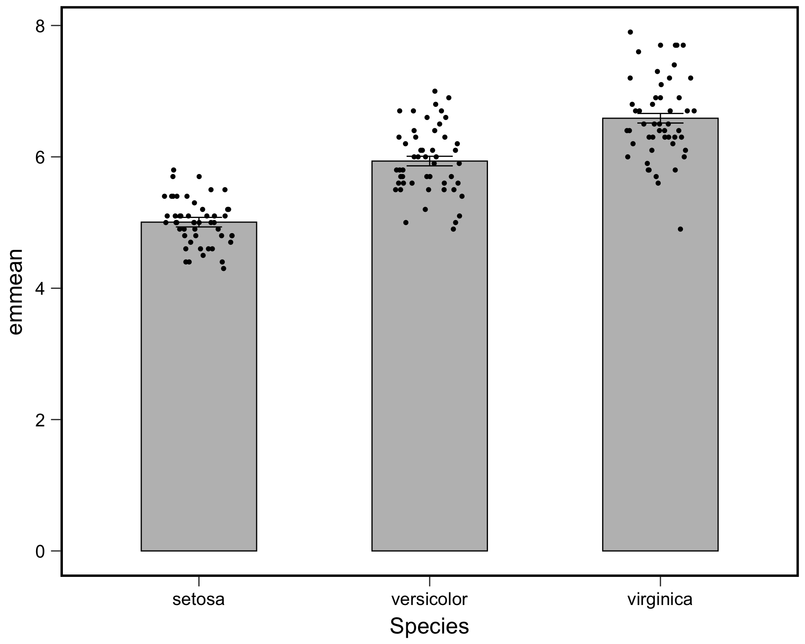
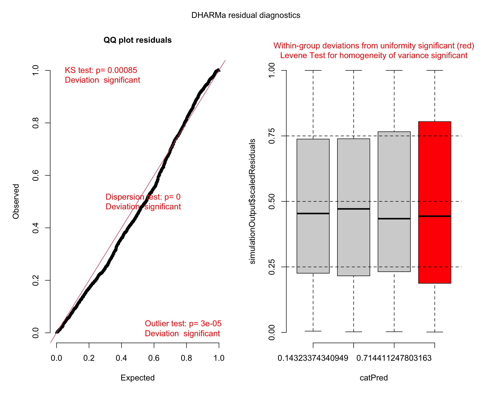
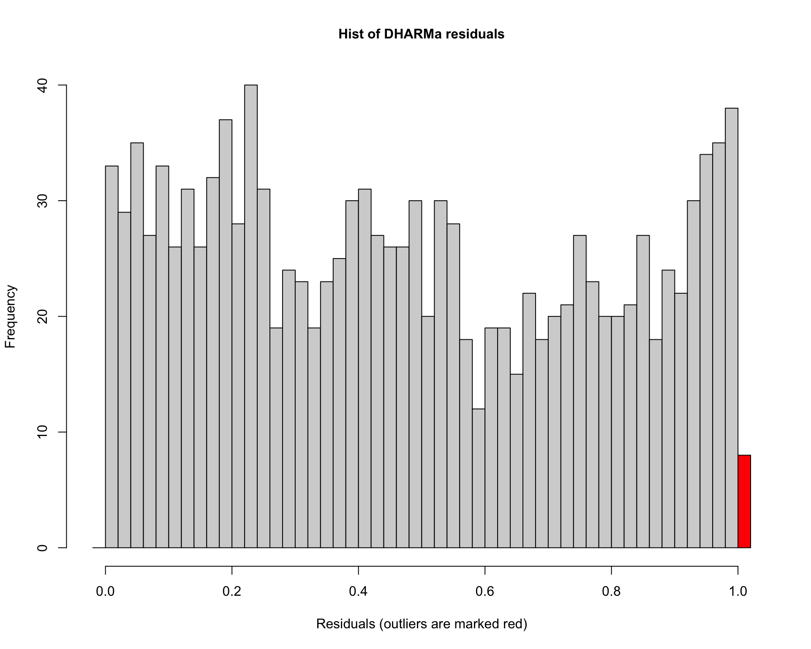
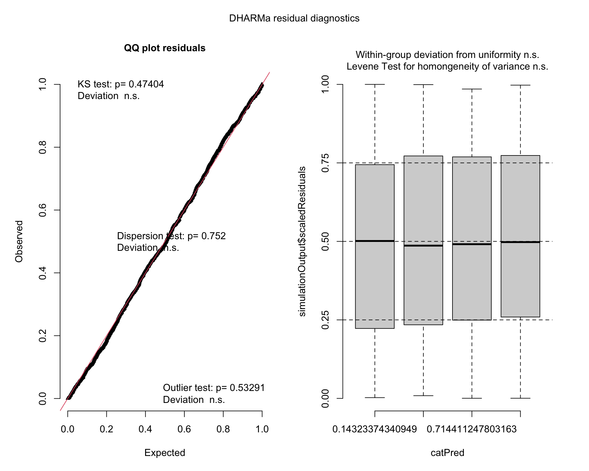
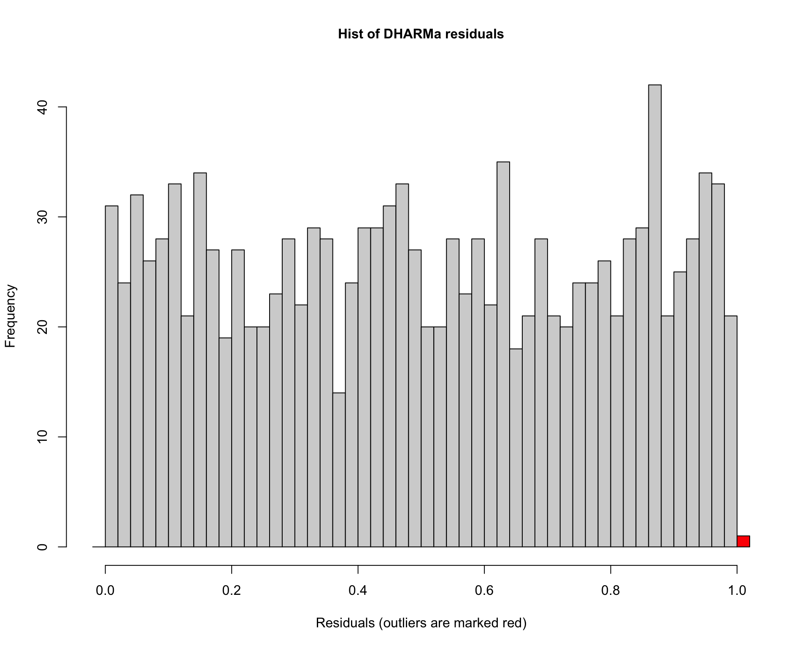

Chapter 6 Overdispersion
In this section we will go over how to deal with overdispersion.
Let’s load the necessary libraries:
library(tidyverse)
library(emmeans)
library(car)
library(agridat)Load in and read about the beall.webworms dataset. The variables of interest are the y-count of webworms, spray-spray treatment, and lead-lead treatment. Don’t worry about the block or other variables for now.
data("beall.webworms")
d1 <- beall.webwormshead(d1)## row col y block trt spray lead
## 1 1 1 1 B1 T1 N N
## 2 2 1 0 B1 T1 N N
## 3 3 1 1 B1 T1 N N
## 4 4 1 3 B1 T1 N N
## 5 5 1 6 B1 T1 N N
## 6 6 1 0 B2 T1 N NLet’s examine and plot the data:
ggplot(d1, aes(x=spray, y=y, fill=lead)) +
geom_violin(scale="width", adjust=2) +
geom_point(position = position_jitterdodge(jitter.width=.5,
jitter.height=.1,
dodge.width = 1),
alpha=.1) +
theme_bw(base_size = 14)
Let’s now run a model with the interaction of spray and lead.
r3 <- glm(y ~ spray * lead, data=d1, family="poisson")Examin the model summary:
summary(r3)##
## Call:
## glm(formula = y ~ spray * lead, family = "poisson", data = d1)
##
## Deviance Residuals:
## Min 1Q Median 3Q Max
## -1.6733 -1.0046 -0.9081 0.6141 4.2771
##
## Coefficients:
## Estimate Std. Error z value Pr(>|z|)
## (Intercept) 0.33647 0.04688 7.177 7.12e-13 ***
## sprayY -1.02043 0.09108 -11.204 < 2e-16 ***
## leadY -0.49628 0.07621 -6.512 7.41e-11 ***
## sprayY:leadY 0.29425 0.13917 2.114 0.0345 *
## ---
## Signif. codes: 0 '***' 0.001 '**' 0.01 '*' 0.05 '.' 0.1 ' ' 1
##
## (Dispersion parameter for poisson family taken to be 1)
##
## Null deviance: 1955.9 on 1299 degrees of freedom
## Residual deviance: 1720.4 on 1296 degrees of freedom
## AIC: 3125.5
##
## Number of Fisher Scoring iterations: 6Anova(r3)## Analysis of Deviance Table (Type II tests)
##
## Response: y
## LR Chisq Df Pr(>Chisq)
## spray 188.707 1 < 2.2e-16 ***
## lead 42.294 1 7.853e-11 ***
## spray:lead 4.452 1 0.03485 *
## ---
## Signif. codes: 0 '***' 0.001 '**' 0.01 '*' 0.05 '.' 0.1 ' ' 1emmeans(r3, ~spray:lead, type='response') ## spray lead rate SE df asymp.LCL asymp.UCL
## N N 1.400 0.0656 Inf 1.277 1.535
## Y N 0.505 0.0394 Inf 0.433 0.588
## N Y 0.852 0.0512 Inf 0.758 0.959
## Y Y 0.412 0.0356 Inf 0.348 0.488
##
## Confidence level used: 0.95
## Intervals are back-transformed from the log scaleWe need to load library(performance) to test for overdispersion:
library(performance)
check_overdispersion(r3) # overdispersion ratio calculator from RVAideMemoire## # Overdispersion test
##
## dispersion ratio = 1.355
## Pearson's Chi-Squared = 1755.717
## p-value = < 0.001Now let’s load the glmmTMB package to implement negative binomial distribution.
library(glmmTMB)
r4 <- glmmTMB(y ~ spray * lead, data=d1, family="nbinom2")
Anova(r4)## Analysis of Deviance Table (Type II Wald chisquare tests)
##
## Response: y
## Chisq Df Pr(>Chisq)
## spray 125.5047 1 < 2.2e-16 ***
## lead 26.8005 1 2.256e-07 ***
## spray:lead 3.3942 1 0.06542 .
## ---
## Signif. codes: 0 '***' 0.001 '**' 0.01 '*' 0.05 '.' 0.1 ' ' 1emmeans(r4, ~spray:lead, type='response') ## spray lead response SE df lower.CL upper.CL
## N N 1.400 0.0855 1295 1.242 1.578
## Y N 0.505 0.0441 1295 0.425 0.599
## N Y 0.852 0.0611 1295 0.740 0.981
## Y Y 0.412 0.0391 1295 0.342 0.497
##
## Confidence level used: 0.95
## Intervals are back-transformed from the log scaleLet’s use the DHARMa package to simulate residuals for poisson and negative binomial models.
library(DHARMa)We can interpret the simulated residuals very similarly to the raw residuals we have previously examined. The residuals should line up along the line in the QQ plot and there should be (roughly) equal scatter in the residuals among the groups
plot(simulateResiduals(r3)) ## plot simulated residuals
Histograms of the simulated residuals will be different than before. Here the simulated residuals should be flat. Its ok if the bars bump up and down, but they should be on average flat across the graph.The bars shouldn’t be peaked (eg. “normally” distributed) or U-shaped or increasing/decreasing.
hist(simulateResiduals(r3)) ## histogram should be flat
Now let’s look at residuals for negative binomial model:
plot(simulateResiduals(r4)) ## plot simulated residuals
hist(simulateResiduals(r4)) ## histogram should be flat